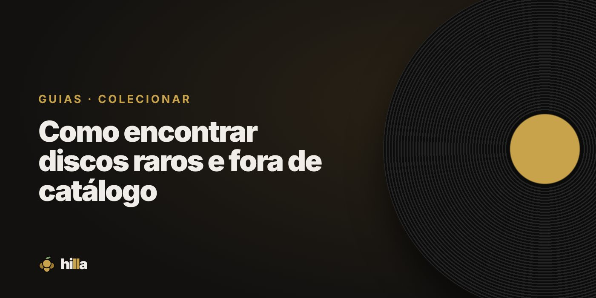

Como encontrar discos raros e fora de catálogo

Todo colecionador tem aquele disco que procura há anos. Encontrar um raro é parte sorte, parte método. A sorte você não controla; o método, sim.
O que torna um disco raro
- Tiragem pequena: selos independentes e lançamentos regionais.
- Nunca reeditado: o álbum saiu uma vez e sumiu.
- Edição específica: primeira prensagem, capa alternativa, país diferente.
- Demanda alta: um disco pode não ser raro, mas ser muito procurado.
Onde procurar
Sebos fora do circuito
Sebos pequenos, em bairros e cidades do interior, recebem coleções de família e nem sempre sabem o que têm.
Coleções inteiras à venda
Anúncios de "vendo coleção de discos" em marketplaces e grupos são onde aparecem raridades. Quem vende uma coleção inteira raramente olha disco por disco.
Discogs
Qualquer disco que existe provavelmente está listado lá. Você pode adicionar à sua lista de desejos no Discogs e acompanhar quando aparecer à venda.
Grupos e fóruns de colecionadores
Muita troca acontece entre colecionadores, antes de chegar ao mercado. Participar da comunidade abre portas.
Feiras
Vendedores costumam guardar as raridades para as feiras. Chegue cedo.
Método: deixe o raro vir até você
- Mantenha uma wishlist clara. Na Hilla, deixe os raros como prioridade e com notas sobre a edição que você quer.
- Conte para as pessoas. Donos de sebo e outros colecionadores lembram de quem procura o quê.
- Seu perfil pode ajudar. Com a wishlist visível no perfil público da Hilla, amigos sabem o que você procura.
- Paciência. Raro aparece quando quer, não quando você quer.
Como não pagar caro demais
- Pesquise o histórico de vendas do disco no Discogs antes de fechar negócio.
- Confira o estado com o mesmo rigor de qualquer usado. Raro em mau estado vale bem menos.
- Verifique se não é uma reedição sendo vendida como original. Veja Como identificar uma prensagem de vinil.
- Considere a reedição: às vezes ela custa uma fração e soa tão bem quanto.
Quando encontrar
Cadastre o disco com o estado, o preço e os detalhes da edição. É o tipo de disco que vale registrar com cuidado. E a primeira vez que ele tocar na vitrola merece um First spin nas Audições.
Organize sua coleção na Hilla
Grátis. Prateleira, wishlist com prioridades e diário de audições, no celular.